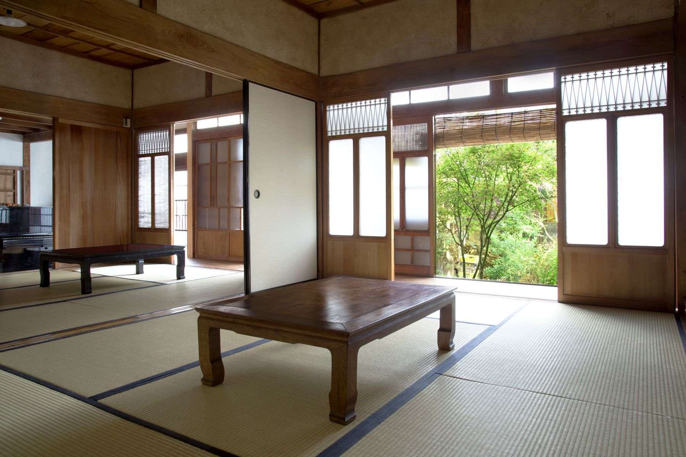
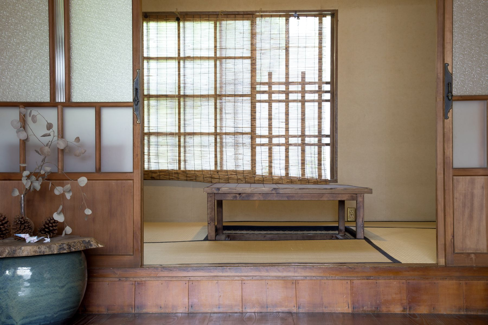
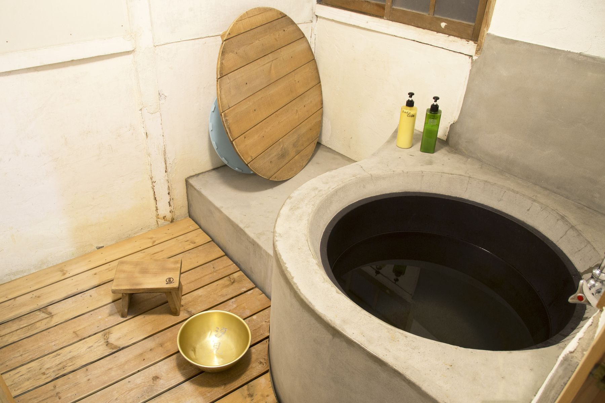
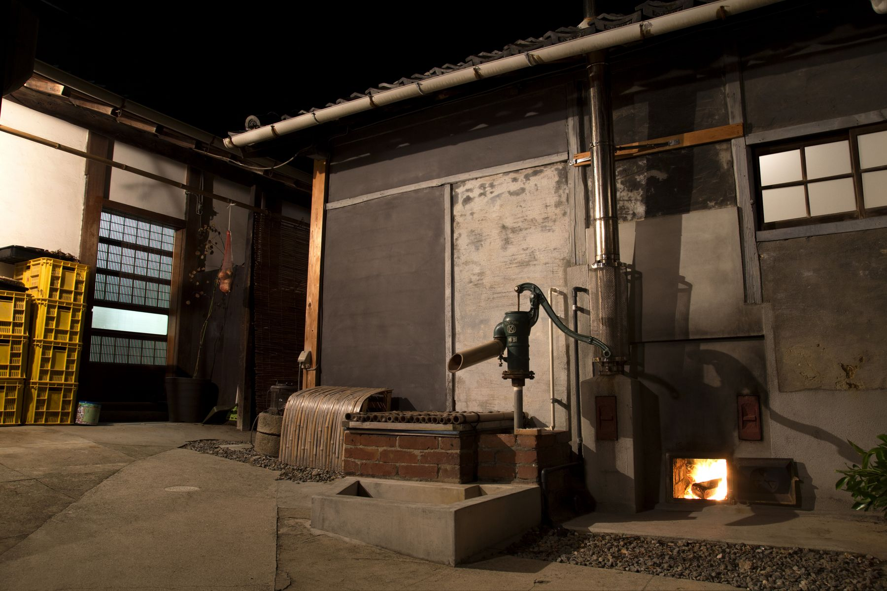
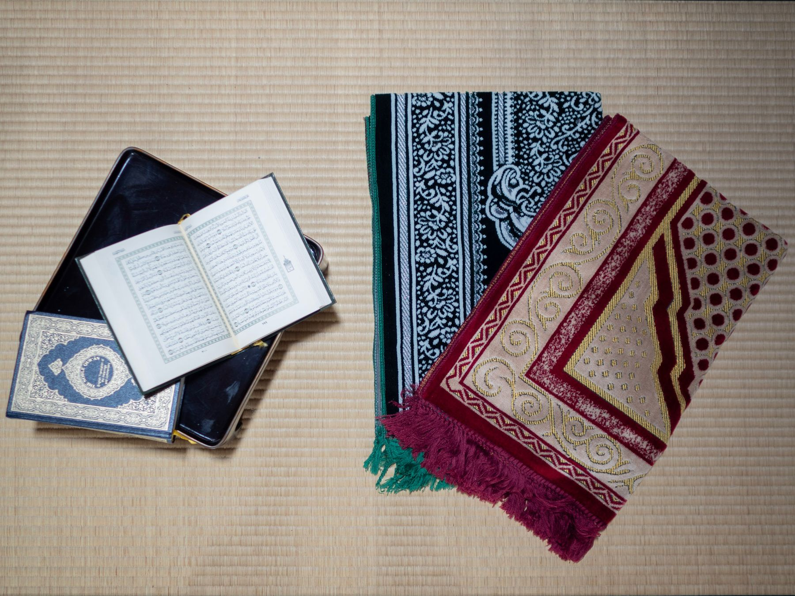
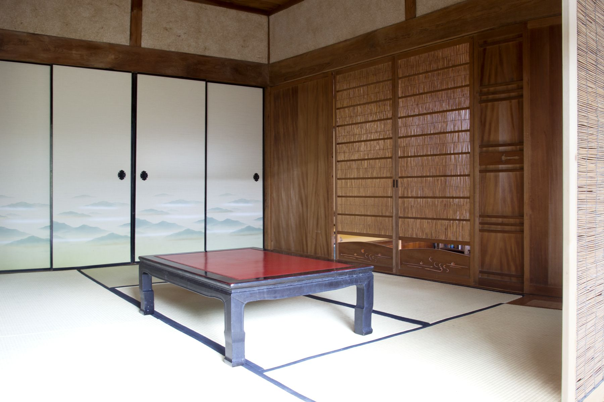
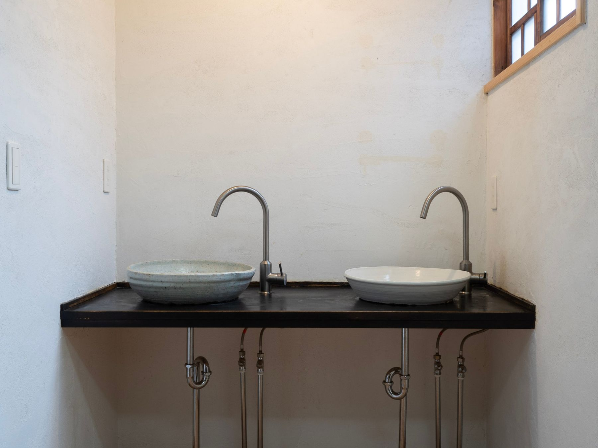
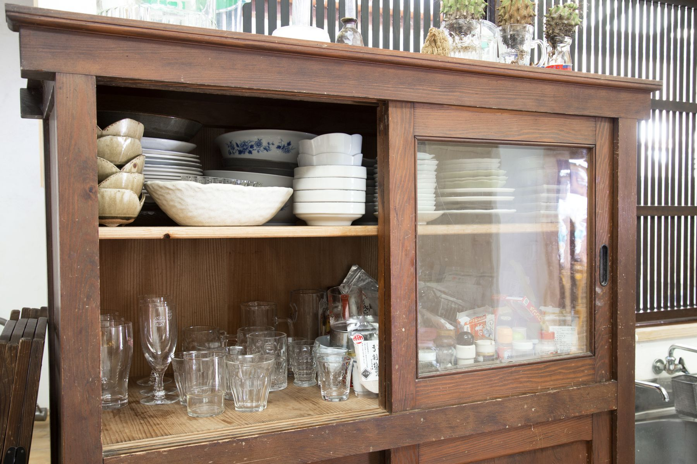

部屋と設備
襖で仕切られた和室に布団を敷きます。定員は7名です。
居室
奥の間（6畳）、表の間（6畳）、天窓の間（3畳）の3室。ご宿泊の人数によって融通して使います。相部屋で始めた宿ですが、いまは原則としてグループごとの個室です。

奥の間（6畳） 表の間（6畳）
表の間（6畳）
天窓の間（3畳）
よその宿には、たぶん無いもの

五右衛門風呂
薪で焚きます。井戸から汲んだ水を沸かすので、湯が軟らかい。沸くまでに時間がかかりますので、ご希望の場合はお申し付けください。焚きつけから湯加減まで、やりたい方にはお任せします。

井戸
土間にあります。手押しポンプ、またはバケツで汲みます。五右衛門風呂に使う水はここから。飲用には適しませんので、そこだけご注意ください。

簡易イスラム礼拝室
ムスリムフレンドリーな宿でありたいと思っています。ご要望に応じて、男女別の礼拝室に設えます。遠慮なくお申し出ください。
クルアーン（アラビア語版、英語対訳版）、キブラシール、カーペットが2セットあります。お清めはシャワールームまたは洗面台をお使いください。お食事についても事前にご相談いただけます。

掘りごたつとピアノ
足を下ろして座れる掘りごたつの間があります。ピアノも置いてあります。弾いてください。

水まわり
洗面台は2台（ドライヤー1台）。洗面台の作陶は工藤冬里さん、手洗いボウルは工藤省治さんによるものです。
シャワールームにはリンスインシャンプーとボディシャンプーを置いています。トイレはウォシュレット2室と、コンポストバイオトイレが1室。

汐見カー
レモン色の軽自動車（ホンダ ライフ）を佐島港の駐車場に置いています。ご宿泊の方でなくても、どなたでもお使いいただけます。
- 使用料
- 3時間まで 1,500円
以降1時間ごとに 400円（ガソリン代込み） - 営業時間
- 8時〜20時
汐見の家がお休みの日は休業します - ご予約
- お電話 0897-72-9800
または shiomihouse@gmail.com
鍵の受け渡しはアナログです。お手数ですが汐見の家までおいでください。使用料には、ガソリン代・保険・車検・洗車・鍵の受け渡しの手間などが含まれています。
設備・アメニティ
- お風呂・洗面
- 五右衛門風呂／シャワールーム（リンスインシャンプー、ボディシャンプー）／洗面台2台（ドライヤー1台）
- お手洗い
- ウォシュレット2室／コンポストバイオトイレ1室
- 台所
- 冷蔵庫／電子レンジ／炊飯器／土鍋2／カセットコンロ2／食器一式
- くつろぐ
- 掘りごたつ／ピアノ／縁側／庭
- 洗濯
- 洗濯乾燥機（洗濯・乾燥 各100円）
- 貸出
- タオル（バスタオル・フェイスタオル 各100円）／貸自転車
- 通信
- フリーWi-Fi
- そのほか
- 井戸（手押しポンプまたはバケツ。飲用不適）／簡易イスラム礼拝室／汐見カー
泊まりに来ませんか
空室のご確認とご予約はこちらから。お電話でも承ります。